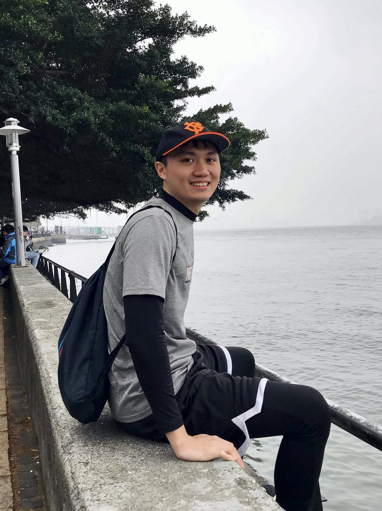
Hao-Hsiang Hsiao
Member of Technical Staff, Ricursive Intelligence
Ph.D. Candidate, Georgia Institute of Technology
I am a Member of Technical Staff at Ricursive Intelligence, while completing my Ph.D. at the Georgia Tech Computer-Aided Design Lab (GTCAD) under the supervision of Prof. Sung Kyu Lim.
My research advances Electronic Design Automation (EDA) for 2D and 3D integrated circuits by combining machine learning, LLM-driven optimization, and accelerated computing — toward faster, smarter physical design flows. I received my B.S. in Electrical Engineering from National Taiwan University and my M.S. in Electrical Engineering and Computer Science from the University of California, Irvine.
Experience
Industry & research appointments

Member of Technical Staff · Ricursive Intelligence
June 2026 – PresentcurrentGraduate Research Assistant · Georgia Institute of Technology
August 2022 – Presentcurrent- AI-based Physical Design Automation for 2D and 3D ICs (Samsung, 2024–27)
- Physical Design Using Reinforcement Learning (NSF, 2023–25)
- Physical Design Closure with Machine Learning (Synopsys, 2024–25)
- Routability Prediction and Optimization for 3D ICs (Nvidia, 2024–25)
PhD Research Intern, Design Automation · NVIDIA, Santa Clara, CA
Spring 2026Technical Intern, R&D Team, EDA Group · Synopsys Inc., Sunnyvale, CA
Summer 2025PhD Research Intern, Design Automation · NVIDIA, Santa Clara, CA
Spring 2025Technical Intern, R&D Team, EDA Group · Synopsys Inc., Sunnyvale, CA
May 2024 – December 2024- Developed an Intelligent Recipe Recommendation System for Fusion Compiler
Technical Intern, R&D Team, Silicon Realization Group · Synopsys Inc., Sunnyvale, CA (remote)
Summer 2022- Developed a Reinforcement Learning AI agent for Physical Design global placement
Publications
Selected peer-reviewed work
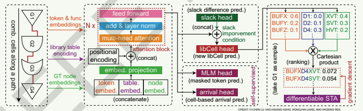
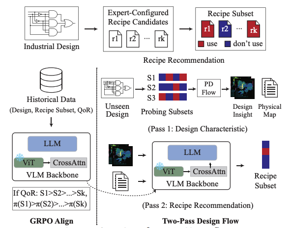
MapTuner: Multimodal Recipe Recommendation for Physical Design with Layout Maps and Design Insights
IEEE International Conference on LLM-Aided Design (ICLAD), 2026
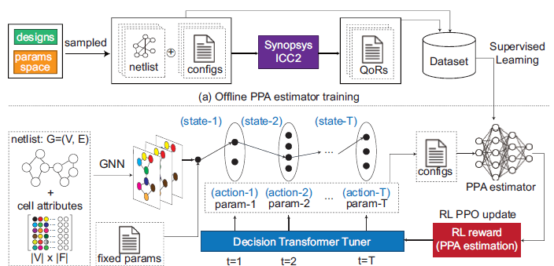
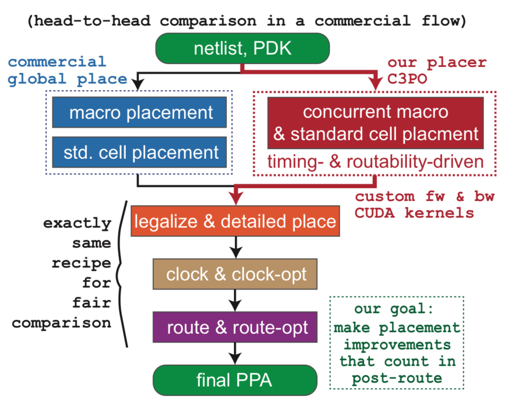
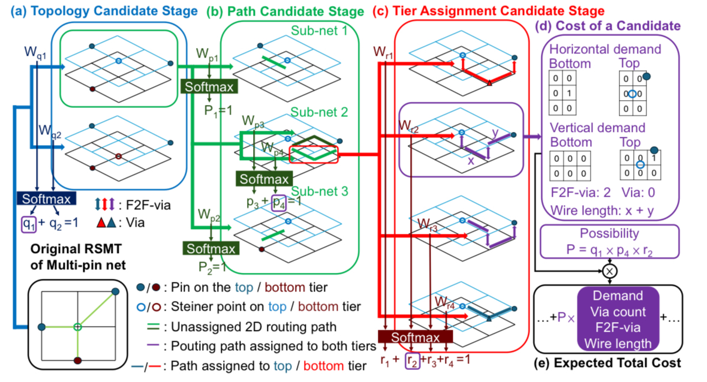
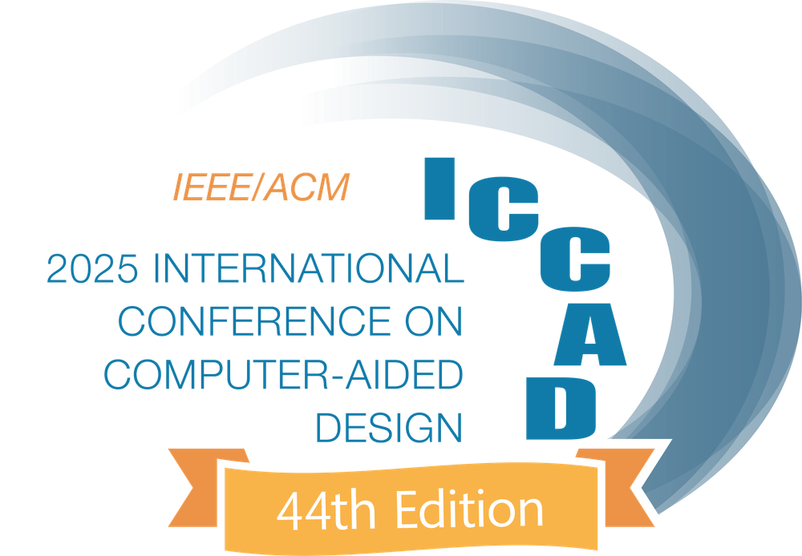
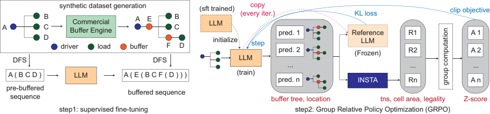
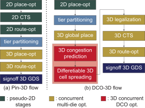
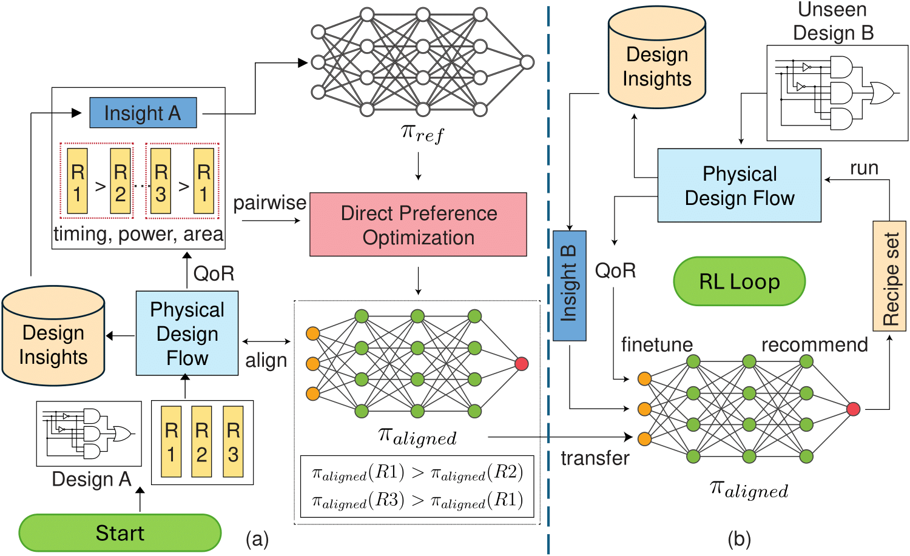
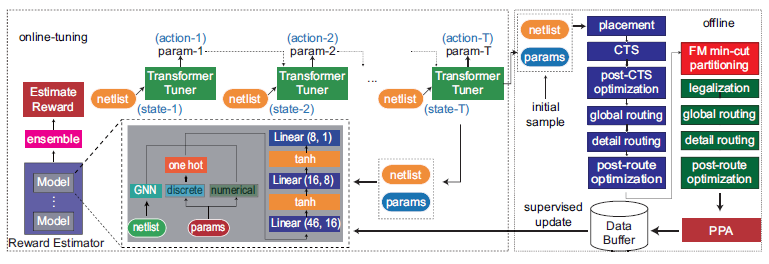
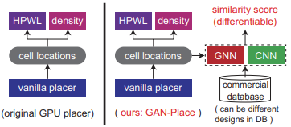
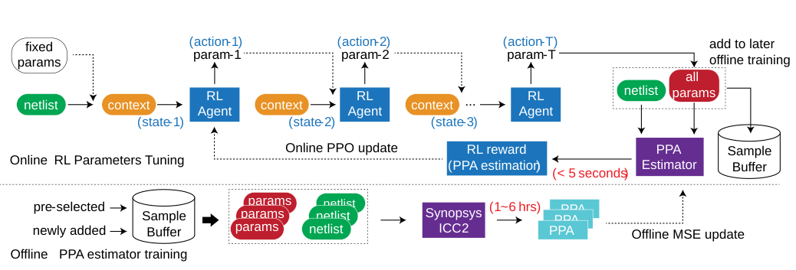